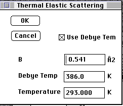
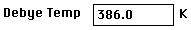
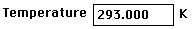

Distributed By: Virtual Labs
Debye-Waller Calculations
PATH...Parameter Menu:Define Unit Cells:Unit
Cell Dialog Box::
(Debye-W<double click >)
For users wishing to explore the effect of the Debye-Waller factor
on relative diffraction intensities, it is often difficult to find an exact
Debye-Waller factor, since in general the exact factor needs to be determined
by complex experimentation. However, using the standard Debye-Temperature
model of harmonic oscillators, Desktop Microscopist allows the user to calculate
an approximate Debye-Waller factor. This feature can be activated by two
methods. The first is to go to the Structure
Factor Dialog Box that has a feature which will calculate Debye-Waller
factors for all the atoms in the crystal using the harmonic oscillator approximation
at the given temperature. The second method is activated by double clicking
on the Debye-Waller column in the Crystal or Wyckoff definition dialog boxes.
This action will bring up the following dialog box.

Debeye-Waller Factor Calculation Dialog Box
- This check box activates the use of the Debye
Temperature, and the experiment temperature to calculate the Debye-Waller
Factor (B). If, unchecked the B entered is the value used
in the Crystal Definition box.
 The Debye Temp. is an accepted Debye Temperature for
the pure element. As a general rule, this value is not to be blindly accepted
for a given bondng situation. The first value when the user launches the
Dialog Box is always the accepted value. The user may change this value
for a B value calculation. However, the new value is not stored
by the program.
 The temperature is the temperature in degress Kelvin
for which the diffraction pattern of interest was taken.
Author: J.ames T.
Stanley
 Desktop
Manual:Dialog Boxes
Desktop
Manual:Dialog Boxes
Distributed By: Virtual Labs
Last Updated:1/12/96 Sat, Apr 27, 1996